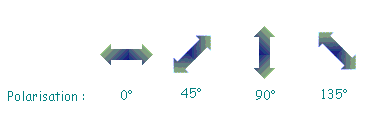
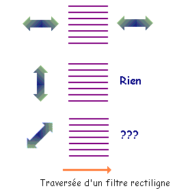
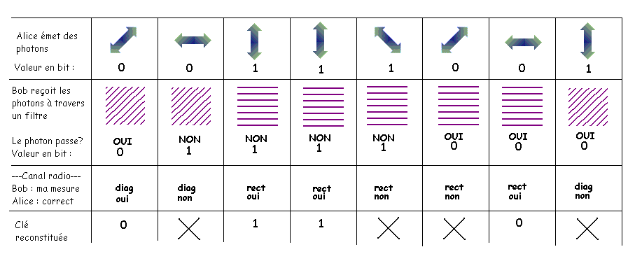
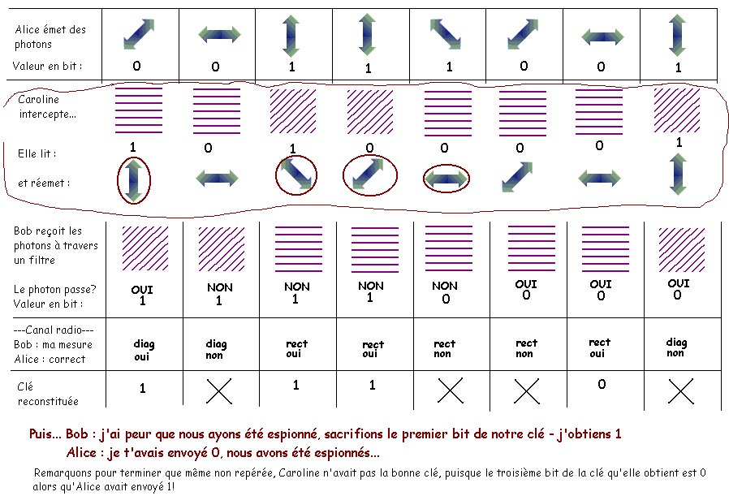

La cryptographie quantique
Le chiffre parfaitement sûr existe! Il s'agit du one-time pad de Vernam, dit aussi masque jetable, utilisé par exemple pour coder le téléphone rouge entre Washington et Moscou. La difficulté essentielle à résoudre, pour utiliser concrètement ce moyen de cryptage, consiste en le transport des clés, qui doivent être aussi longues que le message qu'on envoie. Jusqu'à présent, les Etats les transportaient par le biais de la valise diplomatique, même si ce canal n'est pas totalement inviolable.
L'utilisation de la mécanique quantique va peut-être permettre de résoudre ce problème. Cette fois, la sécurité est garantie non par des théorèmes mathématiques, mais par les lois fondamentales de la physique comme le principe d'incertitude d'Heisenberg qui affirme que certaines quantités ne peuvent pas être mesurées simultanément. Dans le transport de clé "quantique", l'information est transportée par les photons, ces composants élémentaires de la lumière. Chaque photon peut être polarisé, c'est-à-dire que l'on impose une direction à son champ électrique. La polarisation est mesurée par un angle qui varie de 0° à 180°. Dans le protocole que nous décrivons, dû aux canadiens CH.Bennett et G.Brassard, la polarisation peut prendre 4 valeurs : 0°, 45°, 90°, 135°. Pour les photons polarisés de 0° à 90°, on parle de polarisation rectiligne, pour ceux polarisés de 45° à 135°, de polarisation diagonale :

Il nous faut pouvoir détecter la polarisation des photos. Pour cela, on utilise un filtre polarisant suivi d'un détecteur de photons. Si un photon polarisé à 0° rencontre un filtre polarisant orienté à 0°, il traverse ce filtre polarisant et est enregistré par le détecteur placé juste après. Si un photon polarisé à 90° rencontre le même filtre, il est immédiatement stoppé, et le détecteur n'enregistre rien. Maintenant, si le photon est polarisé diagonalement (45° ou 135°), une fois sur deux, il traverse le filtre, et une fois sur deux, il est stoppé. Si on peut distinguer entre une polarisation à 0° et à 90°, il est impossible de distinguer en même temps entre une polarisation à 45° et à 135°! De la même façon, on peut utiliser un filtre polarisant orienté à 45° : il laisse passer les photons polarisés à 45°, stoppe ceux polarisés à 135°, et se comporte aléatoirement avec ceux à 0° et 90°!

Décrivons alors le protocole qu'Alice et Bob doivent respecter pour qu'Alice envoie à Bob une clé secrète constituée de 0 et de 1; ils disposent de 2 canaux d'échange : un canal quantique, où ils peuvent s'échanger des photons polarisés, et un canal radio; non protégé, où ils peuvent discuter. Ils conviennent que les photons polarisés à 0° ou 45° représentent 0, et ceux polarisés à 90° ou 135° représentent 1. Alice émet, sur le canal quantique, une suite de photons polarisés au hasard parmi 0°, 45°, 90° et 135°. A l'autre bout, Bob reçoit les photons et mesure aléatoirement ou leur polarisation rectiligne (filtre placé à 0°), ou leur polarisation diagonale (filtre placé à 45°). Si le photon traverse le filtre, Bob note 0, sinon il note 1.
Bien sûr, certaines mesures de Bob (en moyenne, une sur deux) n'ont pas d'intérêt : il a pu essayer de mesurer la polarisation rectiligne d'un photon polarisé à 45°, ce qui n'a pas de sens et donne un résultat aléatoire (par exemple, le photon a été bloqué par le filtre, Bob note donc 1 alors qu'Alice avait envoyé 0). Pour éliminer ces bits sans sens, il indique à Alice, par le canal radio, quelle type de mesure (rectiligne ou diagonale) il a faite pour chaque photon. Par le même canal radio, Alice lui indique quelles sont les mesures correctes (photon polarisé à 0° ou 90° avec filtre rectiligne, photon à 45° ou 135° avec filtre diagonal), dans l'exemple ci-dessous la 1, la 3, la 4, et la 7. Les bits 1,3,4,7 sont désormais connus à la fois de Bob et d'Alice, et constituent leur clé secrète commune.

Il faut encore vérifier que ce protocole est sûr. Si Caroline écoute le canal quantique, elle peut faire la même chose que Bob, ie intercepter les photons en plaçant un filtre polarisant tantôt rectiligne, tantôt diagonal. Pour que Bob ne se doute de rien, elle doit réémettre un photon polarisé. Elle va essayer d'envoyer le même photon qu'Alice, mais comme elle a une chance sur deux d'avoir choisi le mauvais filtre, elle a une chance sur deux de se tromper. Quand Bob reçoit le photon, s'il est mal polarisé par Caroline, il a une chance sur deux d'avoir un résultat différent d'avec le photon original, et finalement, pour chaque photon intercepté par Caroline, il y a une chance sur 4 que Bob reçoive une information erronée.
Alice et Bob décident alors de "sacrifier" une partie de leur clé commune. Parmi tous les bits qu'ils ont en commun, ils en choisissent quelques-uns au hasard, et les compare publiquement par le canal radio : s'ils sont différents, ils ont une preuve qu'ils ont été écoutés, et ils oublient vite cette clé. En comparant suffisamment de bits, ils ont une garantie presque absolue de ne pas avoir écouté.

La cryptographie quantique a désormais dépassé le domaine de la recherche fondamentale pour atteindre celui du développement
et de la commercialisation. Vitesse et distance restent limités (une centaine de bits par secondes sur une distance d'environ 100km).
Mais bien sûr, dans ce genre de développement, il est bien difficile de savoir quels sont les derniers progrès, sans doute sous le sceau du secret.
Sources :
- La cryptographie quantique, J-P Delahaye, Pour la Science n°178, Août 1992.
- La cryptographie quantique, C.Bennett, G. Brassard, A. Ekert, Pour La Science Hors-Série, l'Art du Secret, juillet-octobre 2002.
Consulter aussi